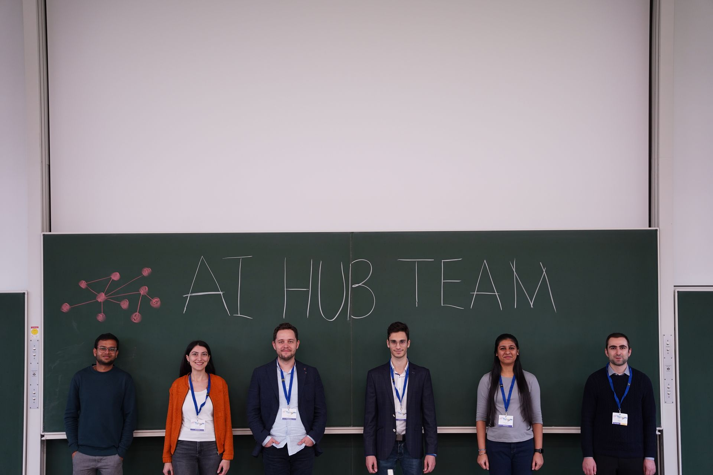
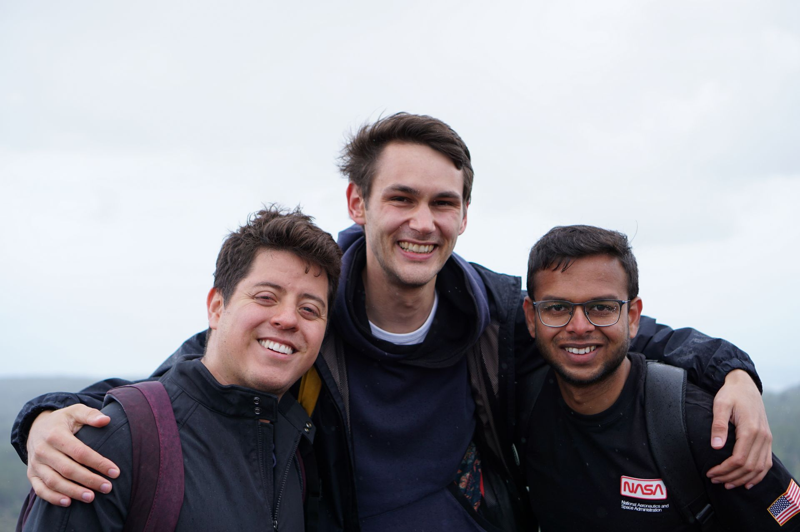

AI Hub @ Karlsruhe – Networking Event
Dr. Cihan Ates (ITS) and Dr. Edouard Fouché (IPD) organized the first AI-oriented international networking event at KIT on 5-7 October. Three keynote speakers, 16 young researchers, and six startups shared the latest developments in their fields and their...
Read more

Spheric 2022
After a 3-year break from Corona, we were at SPHERIC 2022 in Catania, Italy, which was held for the first time again. SPHERIC is a three-day workshop dealing exclusively with the Lagrangian Smoothed Particle Hydrodynamics (SPH) method. At our institute, w...
Read more